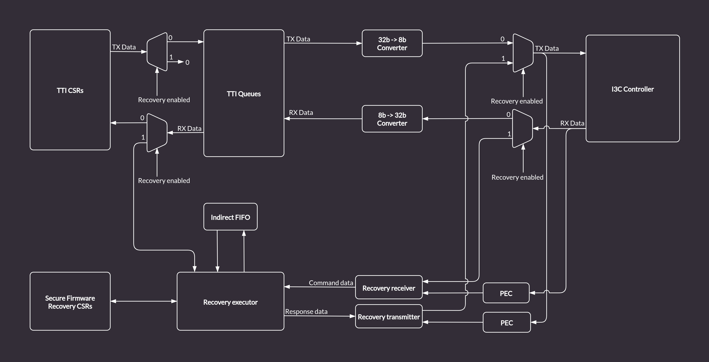
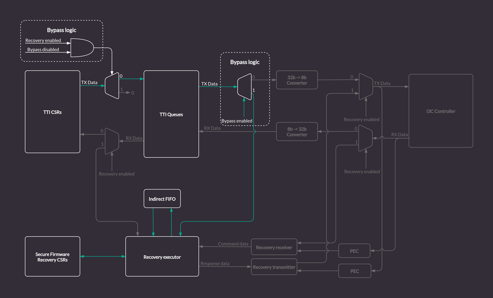

AXI Recovery Flow¶
This chapter describes the AXI-based firmware recovery flow, which allows driving recovery data from within the SoC over the AXI bus, bypassing I3C communication. For the standard I3C-based recovery flow, see Recovery flow.
Overview¶
The recovery flow transfers firmware images from an external source through the I3C core’s Indirect FIFO to the Device Firmware. Three actors participate:
Actor |
Role |
|---|---|
Image Provider |
SoC-internal firmware that reads images from storage and writes them to |
I3C Core |
Hosts the OCP recovery registers and Indirect FIFO |
Device Firmware |
Reads images from the Indirect FIFO, validates, and boots them |
The Image Provider and Device Firmware operate concurrently and synchronize through shared OCP recovery registers in the I3C core.
Prerequisite¶
Enable AXI bypass mode before starting recovery:
REC_INTF_CFG.REC_INTF_BYPASS = 1
This routes data directly from the AXI bus to the Indirect FIFO, bypassing the I3C protocol logic. The Device Firmware operates identically in both I3C and AXI bypass modes.
Warning
Once set, REC_INTF_BYPASS must not be cleared until the next system
reset. This is a one-time configuration for the life of the reset domain.
Multi-Stage Recovery Flow¶
The recovery flow transfers one or more images in sequence. Each image is
identified by a REC_IMG_INDEX value. The number of stages and their content
are platform-defined. A typical three-stage example:
Stage |
REC_IMG_INDEX |
Description |
|---|---|---|
0 |
0x0 |
Primary firmware image |
1 |
0x1 |
Configuration / manifest |
2 |
0x2 |
Application firmware |
Each stage follows the same handshake protocol. The timeline below shows the interleaved register operations between the Image Provider and Device Firmware for a single stage. Steps marked with the same number happen concurrently.
Per-Stage Timeline¶
Image Provider I3C Core Regs Device Firmware
-------------- ------------- ---------------
| | |
| | 1. Write PROT_CAP
| | (recovery caps)
| | |
| | 2. Write DEVICE_STATUS_0
| | .DEV_STATUS = 0x3
| | (recovery mode)
| | |
| | 3. Write RECOVERY_STATUS
| | .DEV_REC_STATUS = 0x1
| | .REC_IMG_INDEX = <stage>
| | (awaiting image)
| | |
| | 3a. Wait for payload_available_o
| | to deassert (no-op on first
| | stage; on subsequent stages
| | waits for Image Provider to
| | clear REC_PAYLOAD_DONE at
| | step 17)
| | |
4. Read PROT_CAP_2 | |
verify recovery capability | |
| | |
5. Poll DEVICE_STATUS_0 | |
until DEV_STATUS == 0x3 | |
| | |
6. Poll RECOVERY_STATUS | |
until DEV_REC_STATUS == 0x1 | |
Read REC_IMG_INDEX to determine | |
which image Device Firmware expects | |
| | |
7. Write INDIRECT_FIFO_CTRL_1 | |
.IMAGE_SIZE = image size in 4B | |
units (i.e. byte count / 4) | |
| | |
v | |
,-------------------------------. | |
| 8. DATA TRANSFER LOOP | | |
| (Provider writes, | | |
| Device FW reads) | | |
`-------------------------------' | |
| | |
| Poll FIFO_STATUS_0.EMPTY | DMA triggered by |
| Write chunk to TTI_TX_DATA_PORT | payload_available_o |
| (max transfer size per chunk) | (reads FIFO_SIZE or |
| | remaining bytes) |
| ... repeat until all data transferred ... |
| | |
9. Write REC_INTF_CFG | |
.REC_PAYLOAD_DONE = 1 | |
(signal last chunk sent) | |
| | |
| | 10. Write DEVICE_STATUS_0
| | .DEV_STATUS = 0x4
| | (recovery pending)
| | |
| | 11. Poll RECOVERY_CTRL
| | .ACTIVATE_REC_IMG
| | until == 0xF
| | |
12. Poll DEVICE_STATUS_0 | |
until DEV_STATUS == 0x4 | |
(Device FW finished reading, | |
waiting for activation) | |
| | |
13. Write REC_INTF_REG_W1C_ACCESS | |
.RECOVERY_CTRL_ACTIVATE_REC_IMG | |
= 0xF (triggers image_activated_o) | |
| | |
| | 14. Write DEV_REC_STATUS = 0x2
| | (processing image)
| | |
15. Poll DEVICE_STATUS_0.DEV_STATUS | |
Wait while DEV_STATUS == 0x4 | |
(Device FW is validating the image) | |
| | |
| | 16. Validate image
| | (crypto verification)
| | |
| | [Intermediate, on success]
| | Clear ACTIVATE_REC_IMG
| | Reset INDIRECT_FIFO_CTRL_0
| | -> loop back to step 2
| | (with next REC_IMG_INDEX)
| | |
| | [On error (any stage)]
| | Write DEV_REC_STATUS >= 0xc
| | Write DEV_STATUS = 0xF
| | |
| | [Final stage, on success]
| | Write DEV_REC_STATUS = 0x3
| | Write DEV_STATUS = 0x1
| | (recovery successful,
| | device healthy)
| | |
17. DEV_STATUS changed from 0x4: | |
0x3 = next stage ready | |
Clear REC_INTF_CFG | |
.REC_PAYLOAD_DONE = 0 | |
-> go back to step 5 | |
0x1 = recovery complete | |
-> exit | |
0xF = error | |
-> abort recovery | |
| | |
Stage-Specific Details¶
Intermediate stages:
Device Firmware validates the received image (e.g. crypto verification)
On success, Device Firmware clears
ACTIVATE_REC_IMG, resets the Indirect FIFO viaINDIRECT_FIFO_CTRL_0.RESET, and loops back to step 2 (writing the nextREC_IMG_INDEX)After writing
RECOVERY_STATUSat step 3, Device Firmware must wait forpayload_available_oto deassert before polling for new payload. This avoids a race where staleREC_PAYLOAD_DONEfrom the prior stage keepspayload_available_oasserted, causing Device Firmware to read the oldIMAGE_SIZE. The Image Provider clearsREC_PAYLOAD_DONEat step 17, which deassertspayload_available_o.Image Provider detects
DEV_REC_STATUS == 0x1at step 17 and loops back to step 5
Final stage:
Same data transfer handshake as intermediate stages
On success, Device Firmware writes
DEV_REC_STATUS = 0x3(recovery successful) andDEV_STATUS = 0x1(device healthy)On error, Device Firmware writes
DEV_REC_STATUS >= 0xcandDEV_STATUS = 0xFImage Provider detects
DEV_REC_STATUS == 0x3at step 17 and exits
Important
Intermediate stage completion: For all stages except the final one,
Device Firmware clears ACTIVATE_REC_IMG, resets the Indirect FIFO via
INDIRECT_FIFO_CTRL_0.RESET, and loops back to step 2 to signal
readiness for the next image. The FIFO reset is performed by Device
Firmware, not the Image Provider. Device Firmware writes DEV_STATUS = 0x3
last (at step 2), after all cleanup is complete.
REC_PAYLOAD_DONE ownership: The Image Provider owns the
REC_INTF_CFG.REC_PAYLOAD_DONE bit. It sets the bit after the last
chunk of each image (step 9) and clears it at step 17 when
DEV_STATUS transitions away from 0x4 (before looping back to step 5).
Between stages, payload_available_o may remain asserted because
REC_PAYLOAD_DONE is still set from the prior stage.
Device Firmware must wait for payload_available_o to deassert after
writing RECOVERY_STATUS (step 3) and before polling for new payload.
This wait ensures the Image Provider has cleared REC_PAYLOAD_DONE
and the new IMAGE_SIZE is valid. Failure to perform this wait can
cause Device Firmware to read a stale image size and set up DMA
transfers with the wrong byte count.
Final stage completion: After the final stage, Device Firmware
writes DEV_REC_STATUS = 0x3 (recovery successful) and
DEV_STATUS = 0x1 (device healthy). The Image Provider polls for
this transition at step 15/17 to confirm recovery is complete.
Note
Once REC_INTF_BYPASS is set to 1, it must not be cleared until the
next system reset. The bypass setting is effectively a one-time
configuration for the life of the reset domain. FW must not write
REC_INTF_BYPASS = 0 after recovery completes.
Authentication Error Handling¶
If Device Firmware fails to authenticate a pushed image at any stage, it
writes an error status to RECOVERY_STATUS.DEV_REC_STATUS (>= 0xc) and
sets DEVICE_STATUS_0.DEV_STATUS = 0xF. The recovery flow terminates
immediately – no further stages are executed. See OCP Recovery v1.1
Section 7.6 for the full list of DEV_REC_STATUS error codes.
The Image Provider should check for error status (DEV_STATUS == 0xF)
at step 15 of each stage. If an error is detected, the Image Provider
should terminate the recovery flow. No retry is attempted.
Note
The Image Provider should not poll indefinitely for a success status without also checking for error conditions. Device Firmware may report an authentication or activation error at any stage. An Image Provider that only polls for DEV_STATUS == 0x3 (next stage) or == 0x1 (success) will hang if Device Firmware writes DEV_STATUS = 0xF instead.
Register Reference¶
Recovery registers are part of the Secure Firmware Recovery Interface extended capability. See Secure Firmware Recovery Interface in Specification for I3C Vendor-Specific Extended Capabilities for the full register list and field descriptions.
The AXI bypass flow also uses two registers from the SoC Management Interface:
REC_INTF_CFG.REC_INTF_BYPASS– enables AXI bypass modeREC_INTF_CFG.REC_PAYLOAD_DONE– signals last chunk writtenREC_INTF_REG_W1C_ACCESS– sideband write path forRECOVERY_CTRLandINDIRECT_FIFO_CTRL(needed because AXI bypass skips the I3C Recovery Handler that normally writes these registers)
Data Transfer Constraints¶
Maximum chunk size per FIFO write is defined by
INDIRECT_FIFO_STATUS_4Image Provider must poll
INDIRECT_FIFO_STATUS_0.EMPTYafter each chunk to ensure Device Firmware has drained the FIFO before writing the next chunkDevice Firmware uses
recovery_payload_available_oas a DMA trigger. Each assertion ofpayload_available_osignals that the Indirect FIFO contains a complete chunk (or the final partial chunk) ready for reading. The DMA reads either the full FIFO contents or, for the last chunk of an image, only the remaining bytes. Once the DMA drains the FIFO,payload_available_odeasserts and the DMA waits for the next assertion.payload_available_oasserts in bypass mode when the Indirect FIFO is full,REC_PAYLOAD_DONEis set, or the image has been activated. It deasserts when the FIFO is empty.REC_PAYLOAD_DONEmust be set after the last chunk (step 9) and cleared by the Image Provider at step 17 when transitioning to the next stage. Device Firmware must not pollpayload_available_ofor a new image until it observespayload_available_odeassert, confirming the Image Provider has clearedREC_PAYLOAD_DONE.
AXI Bypass Architecture¶
In the default I3C mode, the Recovery Handler translates I3C bus traffic into recovery register accesses. The bypass feature routes AXI writes directly to the Indirect FIFO, disabling the I3C communication logic.

Figure 12 Recovery Handler in the I3C Core (standard I3C mode)¶
With bypass enabled, Image Provider writes to TTI_TX_DATA_PORT over AXI.
The hardware forwards those writes through the TTI TX Queue into the Indirect
Data FIFO. Device Firmware reads from the Indirect FIFO over AXI identically
to the I3C flow.

Figure 13 Recovery Handler with AXI bypass (green arrows show bypass data path)¶
AXI transactions may be filtered using the AXI ID field (see AXI Transaction ID Filtering).